Tutorial (Umberto NXT, v7.1.0.13.503)
Michael Rustler
2022-11-18
Source:vignettes/tutorial_umberto07.Rmd
tutorial_umberto07.Rmd1 Install R packages
# Enable repository from kwb-r
options(repos = c(
kwbr = 'https://kwb-r.r-universe.dev',
CRAN = 'https://cloud.r-project.org'))
# Download and install kwb.umberto in R
install.packages('kwb.umberto')3 Import data
3.1 Directory with example .csv files
The example .csv files (in German format, i.e. decimals are indicated
with , and ; is used as field separator) were
exported from Umberto NXT (v7.1.0.13.503) and attached to the R package
kwb.umberto as shown below:
zipfile <- system.file("extdata/umberto-nxt_v7.1.0.13.503/Beispiel_Auswertung.zip",
package = "kwb.umberto")
temp <- file.path(tempdir(), "Beispiel_Auswertung")
unzip(zipfile, exdir = temp)
dir(temp, pattern = ".csv")
#> [1] "Ref_High_C+high N.csv" "Ref_High_C+N.csv" "Ref_Low_C+high N.csv"
#> [4] "Ref_Low_C+N.csv"3.2 Getting the data into R
Using the function kwb.umberto::import_rawdata() and
specifying the parameter csv_dir = temp)
imports the model results from one .csv file that is located in the
folder C:~1/Beispiel_Auswertung.
rawdata <- kwb.umberto::import_rawdata(csv_dir = temp)
#> Importing csv file 'C:\Users\RUNNER~1\AppData\Local\Temp\RtmpKYrDfn/Beispiel_Auswertung/Ref_High_C+high N.csv'
#> ℹ Using "','" as decimal and "'.'" as grouping mark. Use `read_delim()` for more control.
#> Rows: 19996 Columns: 12
#> ── Column specification ────────────────────────────────────────────────────────
#> Delimiter: ";"
#> chr (11): Project, Model, Net, Timestamp, Product, LCI Method, Phase, Proces...
#> dbl (1): Quantity
#>
#> ℹ Use `spec()` to retrieve the full column specification for this data.
#> ℹ Specify the column types or set `show_col_types = FALSE` to quiet this message.
#> Importing csv file 'C:\Users\RUNNER~1\AppData\Local\Temp\RtmpKYrDfn/Beispiel_Auswertung/Ref_High_C+N.csv'
#>
#> ℹ Using "','" as decimal and "'.'" as grouping mark. Use `read_delim()` for more control.
#>
#> Rows: 19996 Columns: 12
#> ── Column specification ────────────────────────────────────────────────────────
#> Delimiter: ";"
#> chr (11): Project, Model, Net, Timestamp, Product, LCI Method, Phase, Proces...
#> dbl (1): Quantity
#>
#> ℹ Use `spec()` to retrieve the full column specification for this data.
#> ℹ Specify the column types or set `show_col_types = FALSE` to quiet this message.
#> Importing csv file 'C:\Users\RUNNER~1\AppData\Local\Temp\RtmpKYrDfn/Beispiel_Auswertung/Ref_Low_C+high N.csv'
#>
#> ℹ Using "','" as decimal and "'.'" as grouping mark. Use `read_delim()` for more control.
#>
#> Rows: 19996 Columns: 12
#> ── Column specification ────────────────────────────────────────────────────────
#> Delimiter: ";"
#> chr (11): Project, Model, Net, Timestamp, Product, LCI Method, Phase, Proces...
#> dbl (1): Quantity
#>
#> ℹ Use `spec()` to retrieve the full column specification for this data.
#> ℹ Specify the column types or set `show_col_types = FALSE` to quiet this message.
#> Importing csv file 'C:\Users\RUNNER~1\AppData\Local\Temp\RtmpKYrDfn/Beispiel_Auswertung/Ref_Low_C+N.csv'
#>
#> ℹ Using "','" as decimal and "'.'" as grouping mark. Use `read_delim()` for more control.
#>
#> Rows: 19996 Columns: 12
#> ── Column specification ────────────────────────────────────────────────────────
#> Delimiter: ";"
#> chr (11): Project, Model, Net, Timestamp, Product, LCI Method, Phase, Proces...
#> dbl (1): Quantity
#>
#> ℹ Use `spec()` to retrieve the full column specification for this data.
#> ℹ Specify the column types or set `show_col_types = FALSE` to quiet this message.To access the structure of the imported data one can run the following command:
head(rawdata)
#> project model net timestamp
#> 1: POWERSTEP_LargeWWTP 0d_Ref_High_C+high N Main Net 11.10.2017 13:13:37
#> 2: POWERSTEP_LargeWWTP 0d_Ref_High_C+high N Main Net 11.10.2017 13:13:37
#> 3: POWERSTEP_LargeWWTP 0d_Ref_High_C+high N Main Net 11.10.2017 13:13:37
#> 4: POWERSTEP_LargeWWTP 0d_Ref_High_C+high N Main Net 11.10.2017 13:13:37
#> 5: POWERSTEP_LargeWWTP 0d_Ref_High_C+high N Main Net 11.10.2017 13:13:37
#> 6: POWERSTEP_LargeWWTP 0d_Ref_High_C+high N Main Net 11.10.2017 13:13:37
#> product
#> 1: VOL [A1 (P3 -> T01)] (75.000,00 m3)
#> 2: VOL [A1 (P3 -> T01)] (75.000,00 m3)
#> 3: VOL [A1 (P3 -> T01)] (75.000,00 m3)
#> 4: VOL [A1 (P3 -> T01)] (75.000,00 m3)
#> 5: VOL [A1 (P3 -> T01)] (75.000,00 m3)
#> 6: VOL [A1 (P3 -> T01)] (75.000,00 m3)
#> lci_method phase
#> 1: ReCiPe Midpoint (H) w/o LT - climate change w/o LT, GWP100 w/o LT Other
#> 2: ReCiPe Midpoint (H) w/o LT - climate change w/o LT, GWP100 w/o LT Other
#> 3: ReCiPe Midpoint (H) w/o LT - climate change w/o LT, GWP100 w/o LT Other
#> 4: ReCiPe Midpoint (H) w/o LT - climate change w/o LT, GWP100 w/o LT Other
#> 5: ReCiPe Midpoint (H) w/o LT - climate change w/o LT, GWP100 w/o LT Other
#> 6: ReCiPe Midpoint (H) w/o LT - climate change w/o LT, GWP100 w/o LT Other
#> process material_type
#> 1: T03: Activated sludge Bad
#> 2: T06: CHP plant Bad
#> 3: T06: CHP plant Bad
#> 4: T07: Centrifuge Bad
#> 5: T11: Electricity WWTP (RER) Bad
#> 6: T11: Electricity WWTP (RER) Bad
#> material
#> 1: Dinitrogen monoxide [air/unspecified]
#> 2: Dinitrogen monoxide [air/urban air close to ground]
#> 3: Methane, non-fossil [air/urban air close to ground]
#> 4: Methane, non-fossil [air/unspecified]
#> 5: Carbon dioxide, fossil [air/lower stratosphere + upper troposphere]
#> 6: Carbon dioxide, fossil [air/non-urban air or from high stacks]
#> quantity unit
#> 1: 2.705416e+03 kg CO2-Eq
#> 2: 1.046256e+02 kg CO2-Eq
#> 3: 5.028974e+02 kg CO2-Eq
#> 4: 2.823968e+02 kg CO2-Eq
#> 5: 2.598285e-05 kg CO2-Eq
#> 6: 1.149843e+04 kg CO2-Eq3.3 Data aggregation
Once the data is imported into R, it can be aggregated as shown in the subsequent subchapters.
3.3.1 Grouping
data_grouped <- kwb.umberto::group_data(rawdata)
head(data_grouped)
#> # A tibble: 6 × 5
#> # Groups: lci_method, model, process [6]
#> lci_method model process unit quant…¹
#> <chr> <chr> <chr> <chr> <dbl>
#> 1 cumulative energy demand - fossil, non-renewable … 0a_R… T11: E… MJ-Eq 145350.
#> 2 cumulative energy demand - fossil, non-renewable … 0a_R… T12: E… MJ-Eq 30204.
#> 3 cumulative energy demand - fossil, non-renewable … 0a_R… T13: F… MJ-Eq 17734.
#> 4 cumulative energy demand - fossil, non-renewable … 0a_R… T14: P… MJ-Eq 21443.
#> 5 cumulative energy demand - fossil, non-renewable … 0a_R… T15: S… MJ-Eq 22137.
#> 6 cumulative energy demand - fossil, non-renewable … 0a_R… T21: M… MJ-Eq 5687.
#> # … with abbreviated variable name ¹quantity_sum3.3.2 Making pivot data
data_pivot <- kwb.umberto::pivot_data(data_grouped)
head(data_pivot)
#> # A tibble: 6 × 6
#> # Groups: lci_method, process [6]
#> lci_method process 0a_Re…¹ 0b_Re…² 0c_Re…³ 0d_Re…⁴
#> <chr> <chr> <dbl> <dbl> <dbl> <dbl>
#> 1 cumulative energy demand - fossil, no… T11: E… 145350. 135761. 162218. 154545.
#> 2 cumulative energy demand - fossil, no… T12: E… 30204. 29674. 30950. 29824.
#> 3 cumulative energy demand - fossil, no… T13: F… 17734. 23087. 25930. 23882.
#> 4 cumulative energy demand - fossil, no… T14: P… 21443. 22178. 21871. 22066.
#> 5 cumulative energy demand - fossil, no… T15: S… 22137. 22794. 23126. 23066.
#> 6 cumulative energy demand - fossil, no… T21: M… 5687. 5829. 5906. 5888.
#> # … with abbreviated variable names ¹`0a_Ref_Low_C+N`, ²`0b_Ref_High_C+N`,
#> # ³`0c_Ref_Low_C+high N`, ⁴`0d_Ref_High_C+high N`
data_pivot_list <- kwb.umberto::create_pivot_list(data_pivot)
#> Warning: `arrange_()` was deprecated in dplyr 0.7.0.
#> ℹ Please use `arrange()` instead.
#> ℹ See vignette('programming') for more help
#> ℹ The deprecated feature was likely used in the dplyr package.
#> Please report the issue at <https://github.com/tidyverse/dplyr/issues>.
#> Joining, by = c("lci_method", "process")
#> Joining, by = c("lci_method", "process")
#> Joining, by = c("lci_method", "process")
#> Joining, by = c("lci_method", "process")
#> Joining, by = c("lci_method", "process")
#> Joining, by = c("lci_method", "process")
#> Joining, by = c("lci_method", "process")
#> Joining, by = c("lci_method", "process")
#> Joining, by = c("lci_method", "process")
head(data_pivot)
#> # A tibble: 6 × 6
#> # Groups: lci_method, process [6]
#> lci_method process 0a_Re…¹ 0b_Re…² 0c_Re…³ 0d_Re…⁴
#> <chr> <chr> <dbl> <dbl> <dbl> <dbl>
#> 1 cumulative energy demand - fossil, no… T11: E… 145350. 135761. 162218. 154545.
#> 2 cumulative energy demand - fossil, no… T12: E… 30204. 29674. 30950. 29824.
#> 3 cumulative energy demand - fossil, no… T13: F… 17734. 23087. 25930. 23882.
#> 4 cumulative energy demand - fossil, no… T14: P… 21443. 22178. 21871. 22066.
#> 5 cumulative energy demand - fossil, no… T15: S… 22137. 22794. 23126. 23066.
#> 6 cumulative energy demand - fossil, no… T21: M… 5687. 5829. 5906. 5888.
#> # … with abbreviated variable names ¹`0a_Ref_Low_C+N`, ²`0b_Ref_High_C+N`,
#> # ³`0c_Ref_Low_C+high N`, ⁴`0d_Ref_High_C+high N`4 Data export
Finally the resulting data can be exported to an EXCEL spreatsheet.
For each lci_method available in the imported dataset a
sheet named lci_method_1 to lci_method_9 will
be created, as there are 9 distinct lci_method available
for this example data set:
- ReCiPe Midpoint (H) w/o LT - climate change w/o LT, GWP100 w/o LT ,
- ReCiPe Midpoint (H) w/o LT - freshwater ecotoxicity w/o LT, FETPinf w/o LT ,
- ReCiPe Midpoint (H) w/o LT - freshwater eutrophication w/o LT, FEP w/o LT ,
- ReCiPe Midpoint (H) w/o LT - human toxicity w/o LT, HTPinf w/o LT ,
- ReCiPe Midpoint (H) w/o LT - marine ecotoxicity w/o LT, METPinf w/o LT ,
- ReCiPe Midpoint (H) w/o LT - marine eutrophication w/o LT, MEP w/o LT ,
- ReCiPe Midpoint (H) w/o LT - terrestrial acidification w/o LT, TAP100 w/o LT ,
- cumulative energy demand - fossil, non-renewable energy resources, fossil ,
- cumulative energy demand - nuclear, non-renewable energy resources, nuclear
export_path <- file.path(temp, "results.xlsx")
print(sprintf("Exporting aggregated results to %s", export_path))
#> [1] "Exporting aggregated results to C:\\Users\\RUNNER~1\\AppData\\Local\\Temp\\RtmpKYrDfn/Beispiel_Auswertung/results.xlsx"
write_xlsx(data_pivot_list,
path = export_path)5 Data visualisation
In addition a simple visualisation of the imported and grouped data
can be performed by calling the function
kwb.umberto::plot_results() as shown below:
rawdata <- kwb.umberto::import_rawdata(csv_dir = temp)
#> Importing csv file 'C:\Users\RUNNER~1\AppData\Local\Temp\RtmpKYrDfn/Beispiel_Auswertung/Ref_High_C+high N.csv'
#> ℹ Using "','" as decimal and "'.'" as grouping mark. Use `read_delim()` for more control.
#> Rows: 19996 Columns: 12
#> ── Column specification ────────────────────────────────────────────────────────
#> Delimiter: ";"
#> chr (11): Project, Model, Net, Timestamp, Product, LCI Method, Phase, Proces...
#> dbl (1): Quantity
#>
#> ℹ Use `spec()` to retrieve the full column specification for this data.
#> ℹ Specify the column types or set `show_col_types = FALSE` to quiet this message.
#> Importing csv file 'C:\Users\RUNNER~1\AppData\Local\Temp\RtmpKYrDfn/Beispiel_Auswertung/Ref_High_C+N.csv'
#>
#> ℹ Using "','" as decimal and "'.'" as grouping mark. Use `read_delim()` for more control.
#>
#> Rows: 19996 Columns: 12
#> ── Column specification ────────────────────────────────────────────────────────
#> Delimiter: ";"
#> chr (11): Project, Model, Net, Timestamp, Product, LCI Method, Phase, Proces...
#> dbl (1): Quantity
#>
#> ℹ Use `spec()` to retrieve the full column specification for this data.
#> ℹ Specify the column types or set `show_col_types = FALSE` to quiet this message.
#> Importing csv file 'C:\Users\RUNNER~1\AppData\Local\Temp\RtmpKYrDfn/Beispiel_Auswertung/Ref_Low_C+high N.csv'
#>
#> ℹ Using "','" as decimal and "'.'" as grouping mark. Use `read_delim()` for more control.
#>
#> Rows: 19996 Columns: 12
#> ── Column specification ────────────────────────────────────────────────────────
#> Delimiter: ";"
#> chr (11): Project, Model, Net, Timestamp, Product, LCI Method, Phase, Proces...
#> dbl (1): Quantity
#>
#> ℹ Use `spec()` to retrieve the full column specification for this data.
#> ℹ Specify the column types or set `show_col_types = FALSE` to quiet this message.
#> Importing csv file 'C:\Users\RUNNER~1\AppData\Local\Temp\RtmpKYrDfn/Beispiel_Auswertung/Ref_Low_C+N.csv'
#>
#> ℹ Using "','" as decimal and "'.'" as grouping mark. Use `read_delim()` for more control.
#>
#> Rows: 19996 Columns: 12
#> ── Column specification ────────────────────────────────────────────────────────
#> Delimiter: ";"
#> chr (11): Project, Model, Net, Timestamp, Product, LCI Method, Phase, Proces...
#> dbl (1): Quantity
#>
#> ℹ Use `spec()` to retrieve the full column specification for this data.
#> ℹ Specify the column types or set `show_col_types = FALSE` to quiet this message.
data_grouped <- kwb.umberto::group_data(rawdata)
kwb.umberto::plot_results(grouped_data = data_grouped)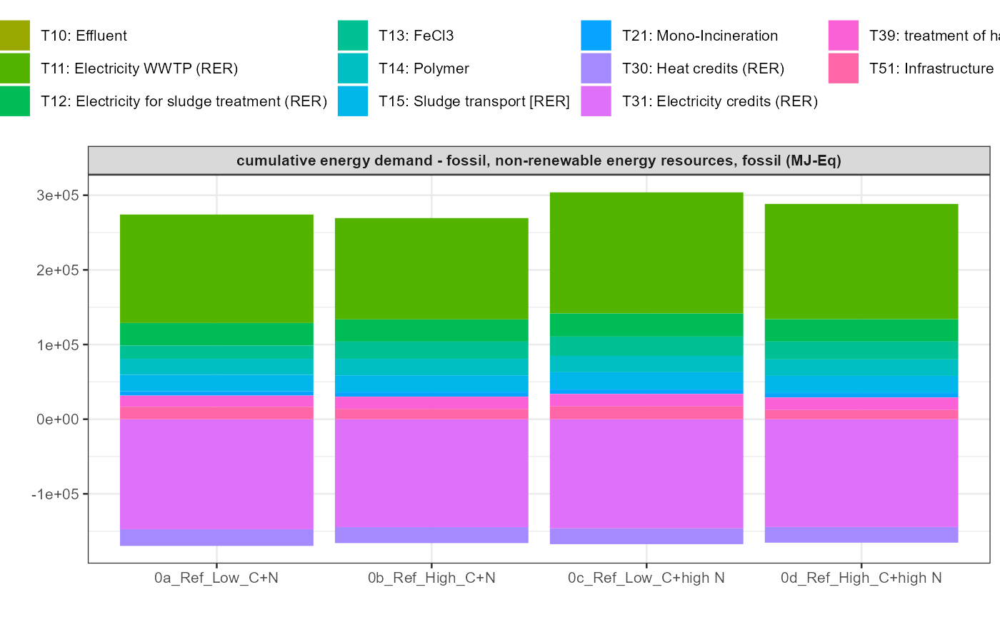 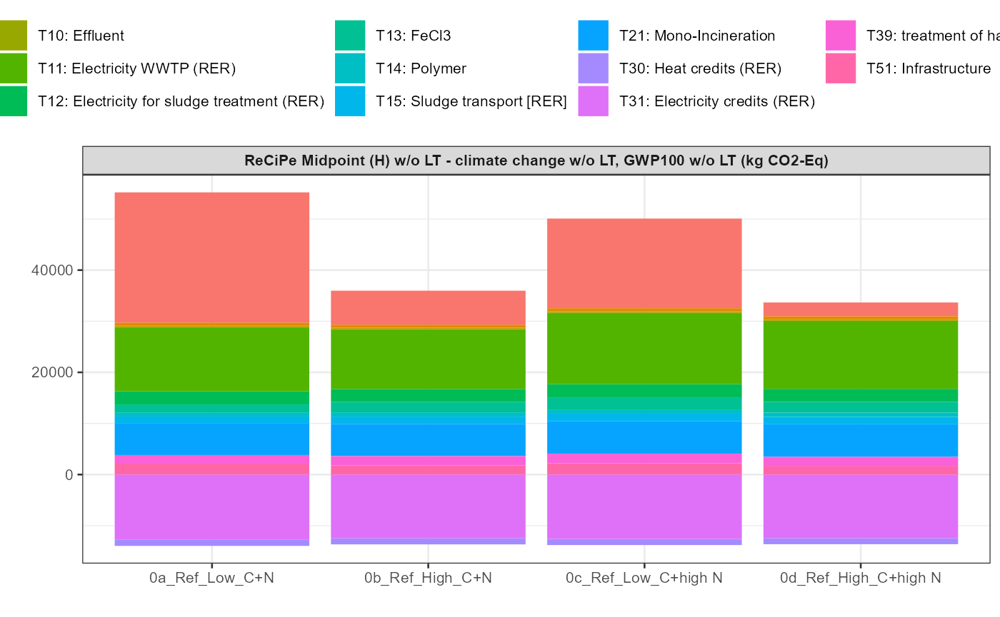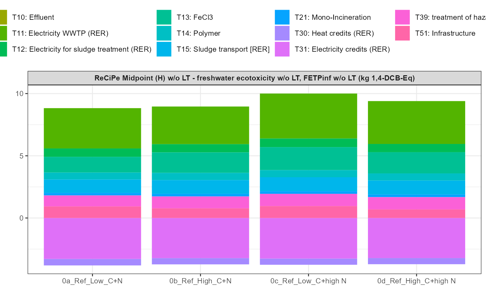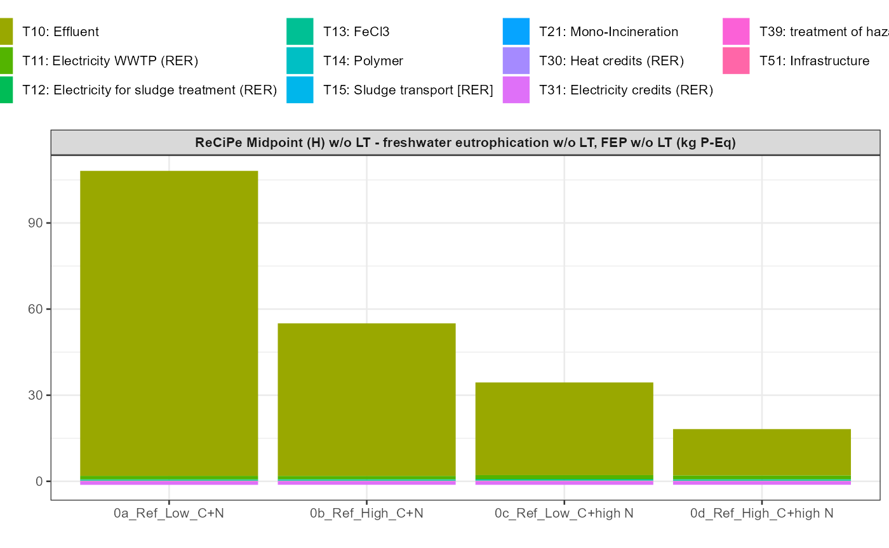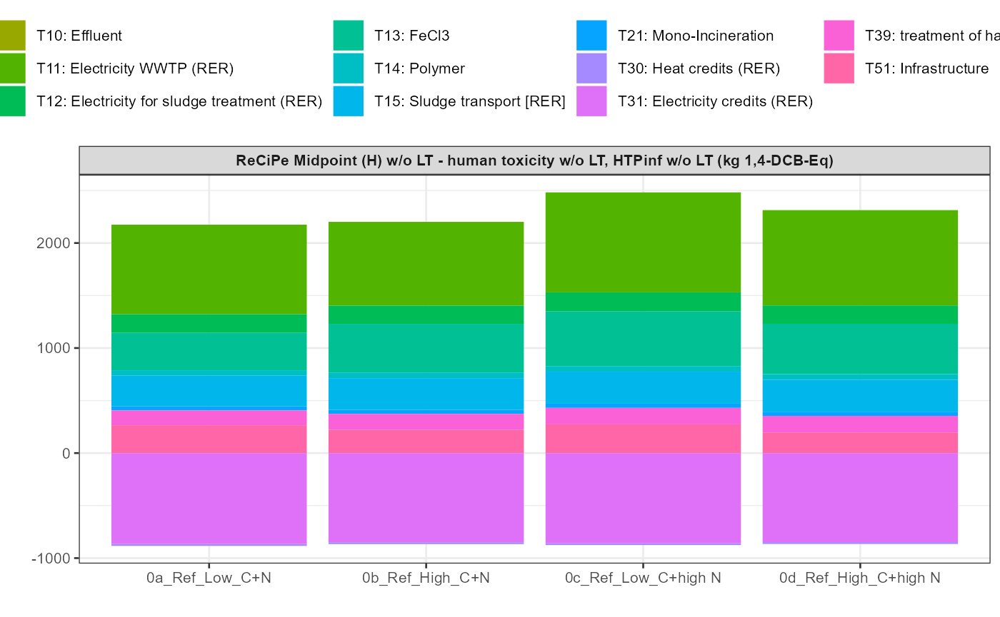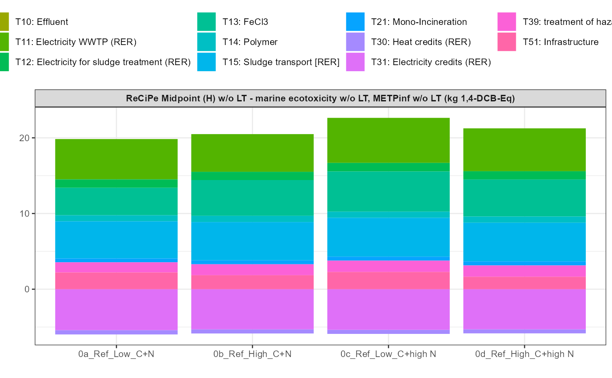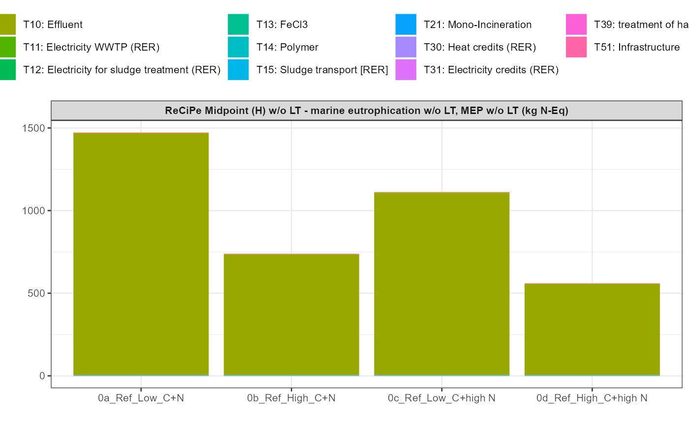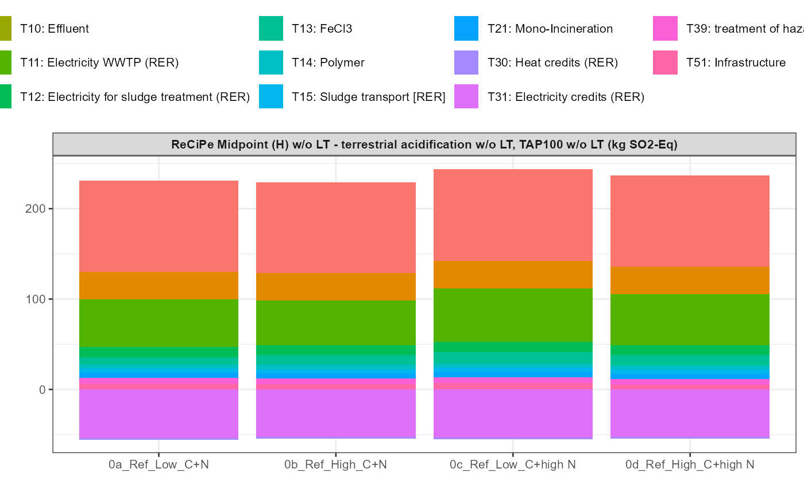
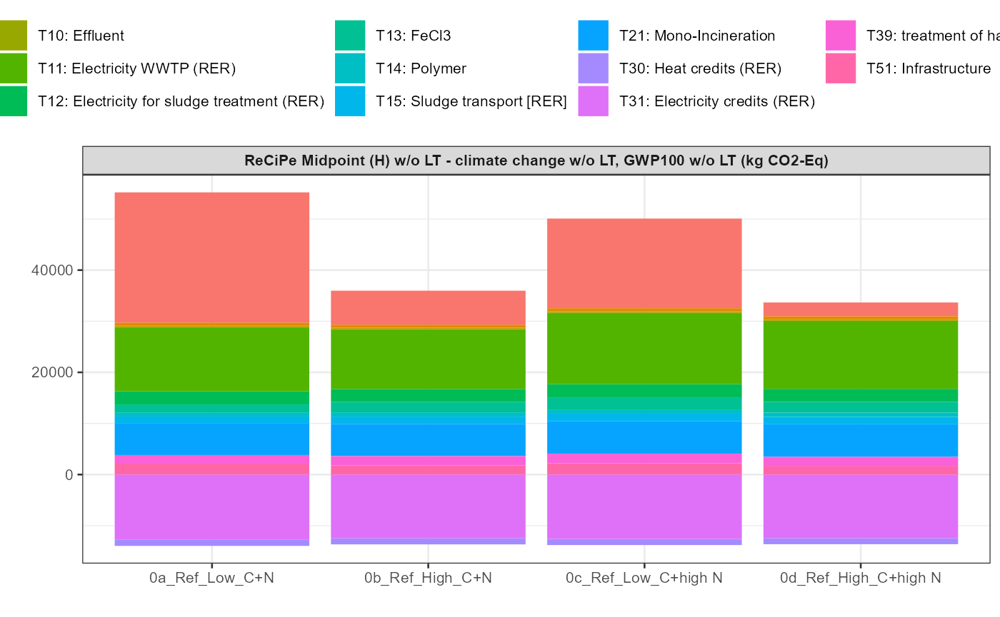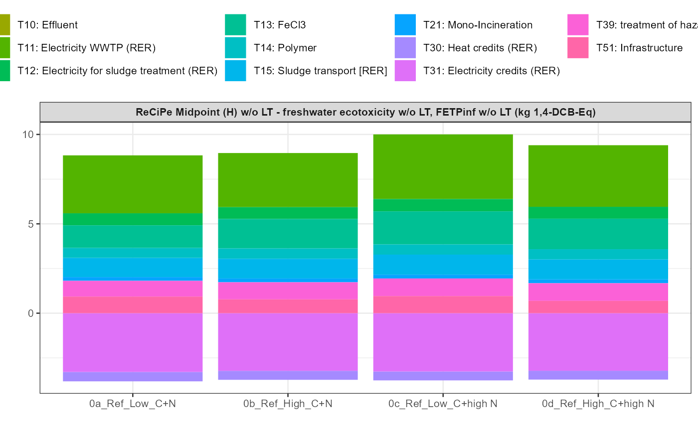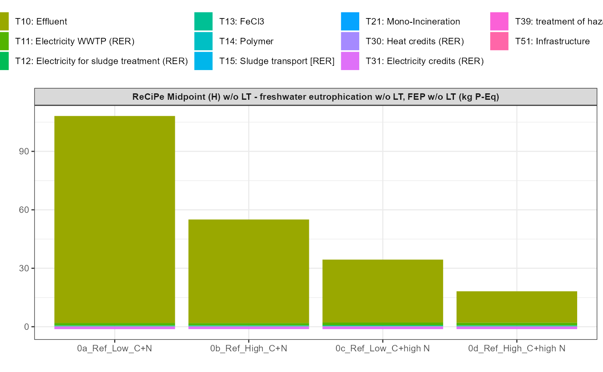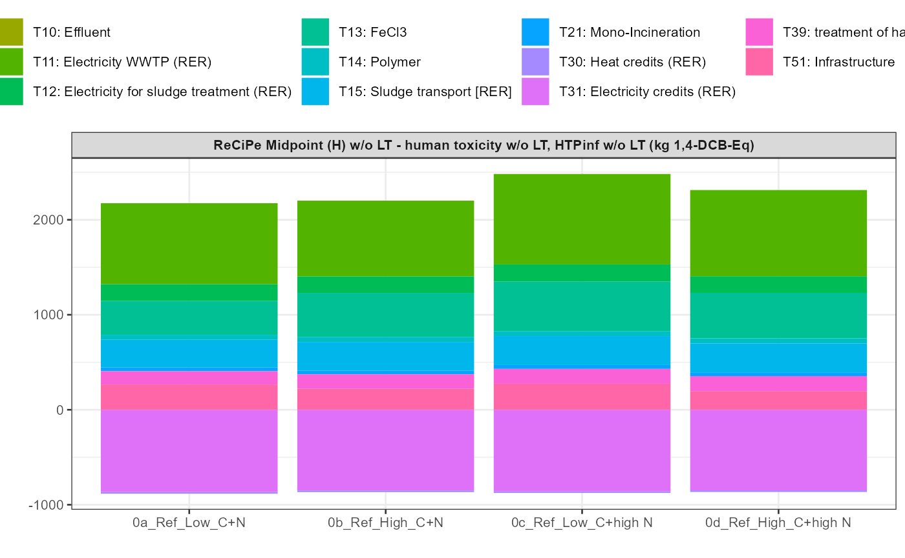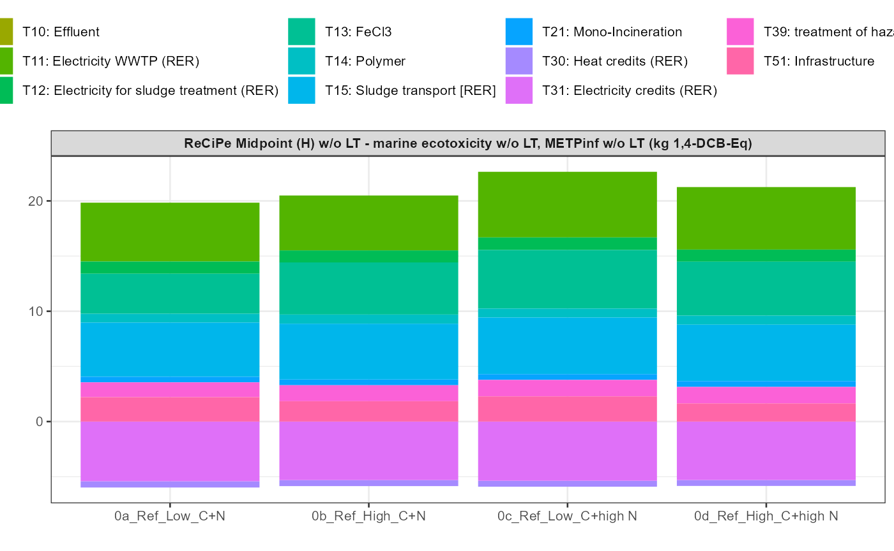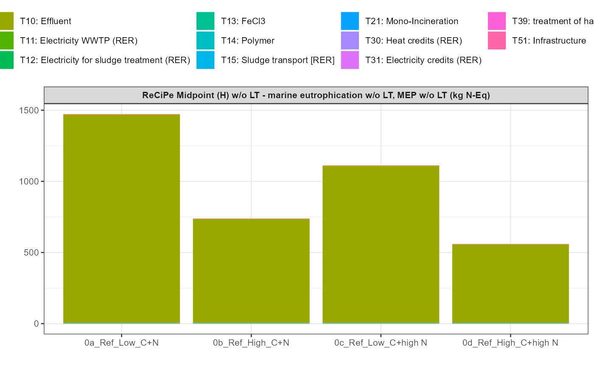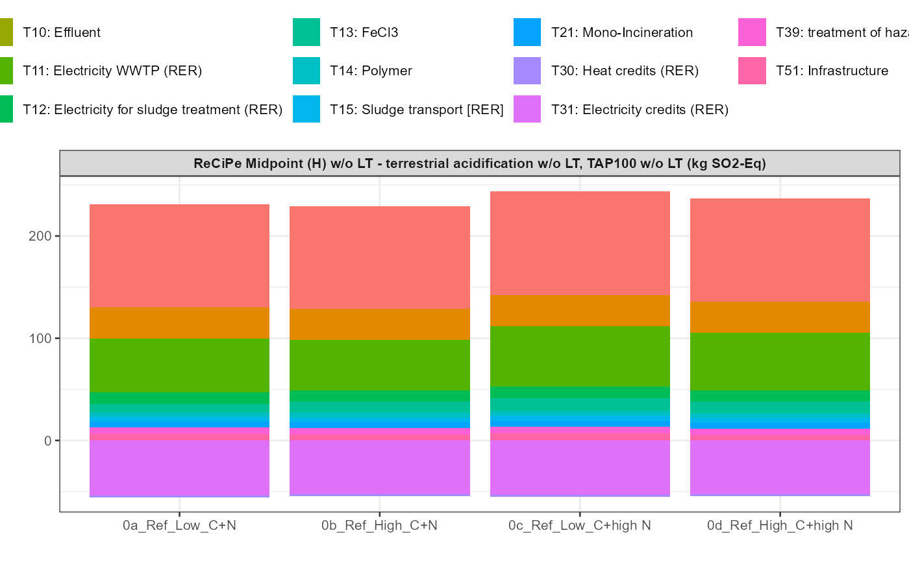